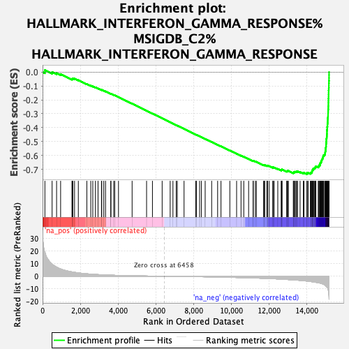
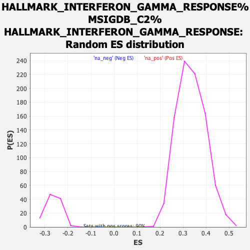

| | | Dataset | MesenvsImmuno_RNASeq_ranks |
| Phenotype | NoPhenotypeAvailable |
| Upregulated in class | na_neg |
| GeneSet | HALLMARK_INTERFERON_GAMMA_RESPONSE%MSIGDB_C2%HALLMARK_INTERFERON_GAMMA_RESPONSE |
| Enrichment Score (ES) | -0.7353244 |
| Normalized Enrichment Score (NES) | -2.7690835 |
| Nominal p-value | 0.0 |
| FDR q-value | 0.0 |
| FWER p-Value | 0.0 |
Table: GSEA Results Summary

Fig 1: Enrichment plot: HALLMARK_INTERFERON_GAMMA_RESPONSE%MSIGDB_C2%HALLMARK_INTERFERON_GAMMA_RESPONSE
Profile of the Running ES Score & Positions of GeneSet Members on the Rank Ordered List
| SYMBOL | RANK IN GENE LIST | RANK METRIC SCORE | RUNNING ES | CORE ENRICHMENT | | 1 | LATS2 | 123 | 18.994 | 0.0142 | No |
| 2 | SELP | 505 | 9.511 | 0.0000 | No |
| 3 | ARID5B | 743 | 7.255 | -0.0072 | No |
| 4 | VCAM1 | 957 | 5.750 | -0.0146 | No |
| 5 | PTGS2 | 1559 | 3.426 | -0.0506 | No |
| 6 | CFH | 1573 | 3.399 | -0.0475 | No |
| 7 | TNFAIP6 | 1605 | 3.336 | -0.0456 | No |
| 8 | CDKN1A | 1695 | 3.080 | -0.0479 | No |
| 9 | IL6 | 1896 | 2.637 | -0.0581 | No |
| 10 | PELI1 | 2347 | 1.926 | -0.0858 | No |
| 11 | SOCS3 | 2555 | 1.682 | -0.0976 | No |
| 12 | C1R | 2663 | 1.549 | -0.1029 | No |
| 13 | HIF1A | 2802 | 1.416 | -0.1104 | No |
| 14 | ARL4A | 2940 | 1.306 | -0.1180 | No |
| 15 | P2RY14 | 3124 | 1.152 | -0.1288 | No |
| 16 | RAPGEF6 | 3137 | 1.138 | -0.1282 | No |
| 17 | C1S | 3246 | 1.062 | -0.1342 | No |
| 18 | SSPN | 3339 | 1.001 | -0.1391 | No |
| 19 | IFITM2 | 3616 | 0.844 | -0.1565 | No |
| 20 | AUTS2 | 3625 | 0.838 | -0.1560 | No |
| 21 | PIM1 | 3773 | 0.754 | -0.1649 | No |
| 22 | PTPN1 | 3826 | 0.731 | -0.1675 | No |
| 23 | CSF2RB | 4026 | 0.643 | -0.1800 | No |
| 24 | ST3GAL5 | 4748 | 0.370 | -0.2275 | No |
| 25 | FPR1 | 5515 | 0.181 | -0.2783 | No |
| 26 | SERPING1 | 5826 | 0.111 | -0.2988 | No |
| 27 | NOD1 | 6341 | 0.018 | -0.3329 | No |
| 28 | CMKLR1 | 6766 | -0.049 | -0.3611 | No |
| 29 | STAT3 | 6913 | -0.073 | -0.3707 | No |
| 30 | BPGM | 7086 | -0.105 | -0.3820 | No |
| 31 | TNFAIP3 | 7142 | -0.115 | -0.3856 | No |
| 32 | ISOC1 | 7502 | -0.179 | -0.4092 | No |
| 33 | ST8SIA4 | 8122 | -0.312 | -0.4501 | No |
| 34 | RIPK1 | 8155 | -0.319 | -0.4518 | No |
| 35 | NUP93 | 8328 | -0.364 | -0.4628 | No |
| 36 | TXNIP | 8423 | -0.389 | -0.4686 | No |
| 37 | PDE4B | 8622 | -0.437 | -0.4813 | No |
| 38 | STAT2 | 8966 | -0.529 | -0.5035 | No |
| 39 | CASP4 | 9282 | -0.623 | -0.5237 | No |
| 40 | BANK1 | 9461 | -0.679 | -0.5347 | No |
| 41 | TRIM25 | 9930 | -0.846 | -0.5649 | No |
| 42 | OGFR | 10289 | -0.980 | -0.5876 | No |
| 43 | MVP | 10523 | -1.073 | -0.6018 | No |
| 44 | TOR1B | 10669 | -1.134 | -0.6101 | No |
| 45 | PML | 10926 | -1.257 | -0.6257 | No |
| 46 | METTL7B | 11167 | -1.371 | -0.6400 | No |
| 47 | IRF8 | 11170 | -1.372 | -0.6385 | No |
| 48 | MT2A | 11283 | -1.423 | -0.6443 | No |
| 49 | PFKP | 11335 | -1.448 | -0.6460 | No |
| 50 | BTG1 | 11719 | -1.632 | -0.6696 | No |
| 51 | IL7 | 11763 | -1.654 | -0.6705 | No |
| 52 | CCL7 | 11778 | -1.664 | -0.6694 | No |
| 53 | LGALS3BP | 11895 | -1.742 | -0.6751 | No |
| 54 | MYD88 | 11919 | -1.754 | -0.6746 | No |
| 55 | IL10RA | 11923 | -1.757 | -0.6727 | No |
| 56 | NFKB1 | 12016 | -1.807 | -0.6767 | No |
| 57 | TRAFD1 | 12208 | -1.957 | -0.6871 | No |
| 58 | TNFAIP2 | 12225 | -1.968 | -0.6859 | No |
| 59 | CASP3 | 12282 | -2.006 | -0.6872 | No |
| 60 | IFNAR2 | 12472 | -2.135 | -0.6973 | No |
| 61 | FCGR1A | 12654 | -2.291 | -0.7066 | No |
| 62 | ZNFX1 | 12671 | -2.305 | -0.7050 | No |
| 63 | VAMP5 | 12690 | -2.315 | -0.7035 | No |
| 64 | IFITM3 | 12696 | -2.318 | -0.7011 | No |
| 65 | LY6E | 12945 | -2.540 | -0.7146 | No |
| 66 | TRIM14 | 12972 | -2.576 | -0.7133 | No |
| 67 | IRF5 | 12995 | -2.604 | -0.7117 | No |
| 68 | RNF213 | 13035 | -2.639 | -0.7112 | No |
| 69 | STAT4 | 13296 | -2.881 | -0.7251 | No |
| 70 | SPPL2A | 13319 | -2.906 | -0.7231 | No |
| 71 | SRI | 13321 | -2.908 | -0.7198 | No |
| 72 | RBCK1 | 13370 | -2.960 | -0.7195 | No |
| 73 | XCL1 | 13395 | -2.985 | -0.7176 | No |
| 74 | PNPT1 | 13459 | -3.050 | -0.7182 | No |
| 75 | PSMB2 | 13467 | -3.054 | -0.7150 | No |
| 76 | FGL2 | 13523 | -3.118 | -0.7150 | No |
| 77 | BST2 | 13655 | -3.286 | -0.7199 | No |
| 78 | RIPK2 | 13826 | -3.498 | -0.7271 | No |
| 79 | MX2 | 13862 | -3.569 | -0.7252 | No |
| 80 | EPSTI1 | 14015 | -3.834 | -0.7308 | Yes |
| 81 | IL2RB | 14025 | -3.853 | -0.7269 | Yes |
| 82 | IRF4 | 14084 | -3.960 | -0.7261 | Yes |
| 83 | RSAD2 | 14195 | -4.169 | -0.7285 | Yes |
| 84 | EIF2AK2 | 14223 | -4.218 | -0.7253 | Yes |
| 85 | HLA-DQA1 | 14260 | -4.274 | -0.7227 | Yes |
| 86 | ADAR | 14288 | -4.344 | -0.7194 | Yes |
| 87 | CD40 | 14290 | -4.349 | -0.7143 | Yes |
| 88 | LCP2 | 14297 | -4.371 | -0.7096 | Yes |
| 89 | HERC6 | 14315 | -4.417 | -0.7055 | Yes |
| 90 | SLC25A28 | 14325 | -4.432 | -0.7009 | Yes |
| 91 | TDRD7 | 14367 | -4.520 | -0.6983 | Yes |
| 92 | CD69 | 14371 | -4.526 | -0.6932 | Yes |
| 93 | HLA-G | 14427 | -4.647 | -0.6914 | Yes |
| 94 | PSMA2 | 14457 | -4.730 | -0.6878 | Yes |
| 95 | GZMA | 14465 | -4.743 | -0.6826 | Yes |
| 96 | IL18BP | 14493 | -4.806 | -0.6788 | Yes |
| 97 | EIF4E3 | 14617 | -5.129 | -0.6809 | Yes |
| 98 | SECTM1 | 14650 | -5.222 | -0.6769 | Yes |
| 99 | OAS3 | 14664 | -5.260 | -0.6716 | Yes |
| 100 | RNF31 | 14709 | -5.421 | -0.6681 | Yes |
| 101 | NFKBIA | 14715 | -5.446 | -0.6621 | Yes |
| 102 | MX1 | 14717 | -5.456 | -0.6557 | Yes |
| 103 | OAS2 | 14745 | -5.542 | -0.6510 | Yes |
| 104 | SAMD9L | 14773 | -5.645 | -0.6462 | Yes |
| 105 | SOCS1 | 14785 | -5.698 | -0.6402 | Yes |
| 106 | ITGB7 | 14801 | -5.772 | -0.6344 | Yes |
| 107 | XAF1 | 14811 | -5.826 | -0.6281 | Yes |
| 108 | PTPN6 | 14844 | -6.001 | -0.6232 | Yes |
| 109 | IL15RA | 14851 | -6.030 | -0.6165 | Yes |
| 110 | SLAMF7 | 14878 | -6.225 | -0.6109 | Yes |
| 111 | TRIM26 | 14881 | -6.242 | -0.6037 | Yes |
| 112 | IRF2 | 14903 | -6.388 | -0.5976 | Yes |
| 113 | TAPBP | 14959 | -6.866 | -0.5932 | Yes |
| 114 | MTHFD2 | 14982 | -7.039 | -0.5864 | Yes |
| 115 | IL15 | 14985 | -7.074 | -0.5782 | Yes |
| 116 | LYSMD2 | 14992 | -7.187 | -0.5701 | Yes |
| 117 | CCL5 | 15008 | -7.365 | -0.5624 | Yes |
| 118 | CMPK2 | 15011 | -7.464 | -0.5538 | Yes |
| 119 | ISG20 | 15014 | -7.538 | -0.5451 | Yes |
| 120 | IRF7 | 15027 | -7.741 | -0.5368 | Yes |
| 121 | PARP14 | 15033 | -7.806 | -0.5279 | Yes |
| 122 | CXCL9 | 15034 | -7.832 | -0.5187 | Yes |
| 123 | DDX58 | 15039 | -7.888 | -0.5097 | Yes |
| 124 | OASL | 15044 | -7.946 | -0.5006 | Yes |
| 125 | WARS | 15047 | -7.961 | -0.4914 | Yes |
| 126 | CD74 | 15048 | -8.001 | -0.4820 | Yes |
| 127 | ZBP1 | 15064 | -8.261 | -0.4732 | Yes |
| 128 | IFI44 | 15070 | -8.325 | -0.4638 | Yes |
| 129 | IFIT2 | 15075 | -8.427 | -0.4541 | Yes |
| 130 | IFIT3 | 15078 | -8.513 | -0.4442 | Yes |
| 131 | IFI27 | 15081 | -8.549 | -0.4343 | Yes |
| 132 | HLA-DRB1 | 15082 | -8.555 | -0.4243 | Yes |
| 133 | VAMP8 | 15085 | -8.569 | -0.4143 | Yes |
| 134 | IFIT1 | 15093 | -8.746 | -0.4045 | Yes |
| 135 | SP110 | 15094 | -8.746 | -0.3942 | Yes |
| 136 | USP18 | 15105 | -8.998 | -0.3843 | Yes |
| 137 | LAP3 | 15107 | -9.054 | -0.3737 | Yes |
| 138 | ISG15 | 15115 | -9.208 | -0.3633 | Yes |
| 139 | RTP4 | 15120 | -9.299 | -0.3527 | Yes |
| 140 | STAT1 | 15122 | -9.323 | -0.3418 | Yes |
| 141 | PARP12 | 15125 | -9.408 | -0.3308 | Yes |
| 142 | IFI30 | 15134 | -10.030 | -0.3196 | Yes |
| 143 | B2M | 15138 | -10.262 | -0.3077 | Yes |
| 144 | TRIM21 | 15140 | -10.289 | -0.2956 | Yes |
| 145 | IDO1 | 15143 | -10.670 | -0.2832 | Yes |
| 146 | TNFSF10 | 15145 | -10.710 | -0.2707 | Yes |
| 147 | HLA-B | 15151 | -11.138 | -0.2579 | Yes |
| 148 | IFIH1 | 15153 | -11.166 | -0.2449 | Yes |
| 149 | CXCL11 | 15156 | -11.475 | -0.2315 | Yes |
| 150 | IRF9 | 15157 | -11.687 | -0.2177 | Yes |
| 151 | HLA-DMA | 15159 | -11.835 | -0.2039 | Yes |
| 152 | PSMB10 | 15161 | -12.009 | -0.1898 | Yes |
| 153 | BATF2 | 15165 | -12.610 | -0.1752 | Yes |
| 154 | HLA-A | 15166 | -12.697 | -0.1602 | Yes |
| 155 | IFI35 | 15168 | -12.717 | -0.1454 | Yes |
| 156 | PLSCR1 | 15169 | -12.766 | -0.1303 | Yes |
| 157 | NMI | 15176 | -13.594 | -0.1147 | Yes |
| 158 | IRF1 | 15181 | -14.452 | -0.0980 | Yes |
| 159 | CXCL10 | 15182 | -14.576 | -0.0809 | Yes |
| 160 | UBE2L6 | 15185 | -15.348 | -0.0629 | Yes |
| 161 | TAP1 | 15190 | -17.869 | -0.0422 | Yes |
| 162 | PSME2 | 15191 | -17.951 | -0.0211 | Yes |
| 163 | GBP4 | 15192 | -17.967 | 0.0001 | Yes |
Table: GSEA details [plain text format]

Fig 2: HALLMARK_INTERFERON_GAMMA_RESPONSE%MSIGDB_C2%HALLMARK_INTERFERON_GAMMA_RESPONSE: Random ES distribution
Gene set null distribution of ES for HALLMARK_INTERFERON_GAMMA_RESPONSE%MSIGDB_C2%HALLMARK_INTERFERON_GAMMA_RESPONSE